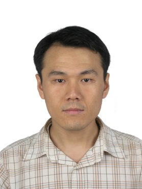

|
|
|
2016年第七届中国计算机学会服务计算学术会议（NCSC2016）
主题报告
NCSC大会报告
报告题目1：Service Computing Research: What Should We Do for the Next 10 Years?
报 告 人： Dr Michael Sheng
报告时间： 9月22日，9：40-10：40
摘要：
Over the past 15 years, service computing has been at the center of intense research and development. However, the very unfortunate reality is that service computing has not reached its full potential in the real world applications. A strategic challenge for the whole community is to analyze why this is the case and what needs to be done to change that in order to move service computing to a better future. In this presentation, I will share some recent thoughts from my collaborations with leading experts in the field on defining a 10-year roadmap for service computing research. I will particularly discuss four main research directions and also briefly introduce some related research projects being conducted in my research group.
 简历： 简历：
Dr Michael Sheng is a full professor and deputy head of School of Computer Science, the University of Adelaide. Prof. Sheng's research interests include Service-Oriented Computing, Internet of Things, Big Data Analytics, Smart Cities, and Pervasive Computing. Prof. Michael Sheng has published more than 260 publications in premier journals and conferences such as ACM Computing Surveys, VLDB Journal, TSC, ACM TOIT, IEEE TPDS, TKDE, Communication of the ACM, IEEE Computer, IEEE Internet Computing, VLDB, WWW, ICDE, CIKM, ICSE, ICWS, and ICSOC. His research has been frequently cited by other researchers. He is listed as one of the top-cited authors in the "World Wide Web" research area by Microsoft Academic Search (ranked 133 out of 49,332 authors, top 0.2%). The Self-Serv research prototype developed by Prof. Michael Sheng during his PhD study at UNSW is one of the most cited research on Web service composition in the world. Prof. Sheng is the recipient of several major awards including ARC Future Fellowship in 2014, the Chris Wallace Award for Outstanding Research Contribution in 2012, and Microsoft Research Fellowship in 2003.
报告题目2：医疗智能开放服务平台
报 告
人： 何国平
报告时间： 9月22日，11：00-12：00
摘要：
详细介绍医疗行业基于SOA架构下智能开放服务平台的设计思路、实现原理、技术框架及应用模式，探索医疗行业微服务的设计、实现和治理；同时会介绍基于智能开放服务平台构建医疗认知服务体系，详细分析医疗行业大数据技术架构、应用现状、发展和存在的问题以及医疗认知计算的最新进展，最后会总结最新IT技术给医疗行业带来的巨大变革及医疗行业未来的技术发展方向。
简历：
何国平，医惠科技有限公司高级副总裁，技术总监；中国卫生信息学会卫生信息标准专业委员会委员；HL7 CHINA 企业成员,拥有MCSE、MCDBA、OCP等多项国际IT认证；作为主要技术人员参与多项国家级重大课题项目和国家卫生信息标准的撰写，是国家高技术研究发展计划（863计划）数字化医疗医院示范课题的架构师和技术负责人，是“十二五”新一代宽带无线移动通信网国家科技重大专项面向数字医院的医疗物联网关键技术研究与设备开发及验证课题架构师和技术负责人，具有非常丰富的医疗行业软件架构设计和开发经验。
报告题目3：服务计算新生态环境和价值出口
报 告 人： 韩燕波教授
报告时间： 9月23日，8：30：00-9：30
摘要：
服务计算与软件工程、数据库/数据处理、分布系统/互操作平台、编程开发环境、业务过程/业务集成和演算等领域有紧密关联。随着相关领域的快速发展，服务计算的基本思想和方法学早已被融入并淹没于其中，服务计算进一步研究工作的价值何在呢？规模矛盾成就了很多研究领域的繁荣，然而与数据处理或软工等领域相比，服务接口和服务库规模其实很小，那服务计算的规模矛盾何在呢？本报告结合实时流数据自动处理和事件分析相关的思考和实践，探讨服务计算相关研究新的生态环境和价值出口。
简历：
韩燕波教授，计算机软件博士（德国柏林工业大学），曾就职于德国国家计算机研究中心、德国弗郎霍夫软件技术研究所和美国大规模分布系统实验室、中科院计算技术研究所等机构。入选中科院百人计划研究员。是InfoSleu GmbH联合创始人。现任北方工业大学数据工程研究院院长、流数据集成与分析技术北京市重点实验室主任。研究兴趣包括：流数据实时处理、大数据关联分析、云计算等。
NCSC-CBPM共享大会报告
报告题目4：Ensuring timely completion of cloud processes
报 告 人： Yun Yang
报告时间： 9月24日，9：30：00-10：30
摘要：
It is the ultimate goal to ensure any process to complete in a timely fashion. In this talk, we look at both computation-intensive scientific workflows and instance-intensive business workflows in the cloud environments. Started with presenting a temporal verification framework, this talk will focus on identifying temporal violations on the fly along workflow execution efficiently and effectively. The corresponding temporal violation handling strategies will also be addressed.
简历：
Yun Yang is a full professor at the School of Software and Electrical Engineering, Swinburne University of Technology, Melbourne, Australia. He was Associate Dean (Research) during 2008-2010 and Associate Head (Research) during 2000-2003. He earned his PhD degree in Computer Science from the University of Queensland in 1992. Professor Yang has been awarded many research grants include eight prestigious Australia Research Council (ARC) grants in the past 10 years. He has (co-)authored five research monographs and over 230 refereed papers. He has also supervised to completion of 16 PhD students as principal supervisor. He is a senior member of IEEE, and serves on the editorial board of IEEE Transactions on Cloud Computing and regularly on program committee of flagship ACM/IEEE International Conference on Software Engineering (ICSE). Professor Yang was a REC member of ARC ERA 2015 for evaluating Australian university research quality. His current research interests are in cost-effective big data management on the cloud, cloud workflow management, cloud service management and software process management. His profile can be accessed via http://www.ict.swin.edu.au/personal/yyang/.
报告题目5：基于互联网的知识工程和知识服务
报 告 人： 金芝
报告时间： 9月24日，10：50-11：50
摘要：
随着互联网的发展和面向服务架构的出现，对知识服务存在越来越迫切的需求，对传统知识工程带来极大的挑战，比如知识的在线获取与挖掘、知识的时变性和情景性、知识的动态融合与协同推理，这些深层次的需求和挑战也为知识工程的发展带来更大的机遇。本报告将与大家一同回顾知识工程的发展历程，分享基于互联网的知识工程的研究心得， 并对未来知识服务和知识服务业进行展望。
简历：
金芝，博士，北京大学教授，博士生导师，国家杰出青年基金获得者，973项目首席科学家。现任北京大学高可信软件技术教育部重点实验室常务副主任，兼任国务院学位委员会软件工程学科评议组成员，中国计算机学会CCF会士与常务理事，中国计算机学会软件工程专业委员会主任，《软件学报》执行主编，《计算机学报》副主编，以及其它多个国内外期刊的编委。主要研究兴趣包括：知识工程、软件需求工程、和基于知识的软件工程等。
CBPM大会报告
报告题目6：业务过程全生命周期管理：从过去到未来
报 告 人： 闻立杰
报告时间： 9月25日，08：30-09：30
摘要：
业务过程管理（Business Process Management，即BPM）作为一个研究领域，集成了来自计算机科学、管理科学和信息系统研究等学科的不同方面。业务过程全生命周期管理包含过程识别、过程发现、过程分析、过程再设计、过程实现以及过程监控六个阶段。本报告将围绕BPM生命周期的六个阶段，以过程即数据（Process as Data）为指导思想，就建模、执行、变更、分析、挖掘、检索共六个方面展开介绍清华大学软件学院业务过程管理团队的研究缘起、研究脉络和研究成果，报告最后将结合BPM的国际最新研究进展，对BPM领域的未来研究方向加以展望。

简历：
闻立杰（1977年-），男，河北唐山人，博士，现任清华大学软件学院副教授/博导，分别于2000年、2007年获清华大学计算机科学与技术系学士、博士学位。围绕海量事件数据的管理和分析挖掘开展研究工作，针对时序数据、图数据提出一系列关键算法，设计开发支持大规模事件数据处理的平台与系统，据此开展事件数据采集清洗、统一存储、特征抽取、特征索引、快速检索等关键技术的研究与应用，实现大规模事件数据的质量控制、集成整合、分析挖掘等功能。截止目前共发表90余篇学术论文，包括IEEE TSC、WWW、Computers in Industry、Journal of Applied Mathematics、DMKD、DKE、JIIS、SoSyM、Information Processing Letters等SCI期刊论文。据Google Scholar统计，发表论文被引用1750多次。主持国家重点研发计划1项、主持国家自然科学基金2项、参与国家NSFC/973/863计划子课题8项、国家核高基重大专项课题1项。获国家发明专利、软件著作权多项，获国家科技进步奖二等奖1项（排名6）、中国电子学会科技进步一等奖1项（排名6）、教育部科技进步一等奖1项（排名6）、BPM 2015最佳学生论文奖。译著3部。现任国际会议BPM、PAKDD、CoopIS程序委员会委员，IEEE过程挖掘工作组XES标准化小组委员。
|